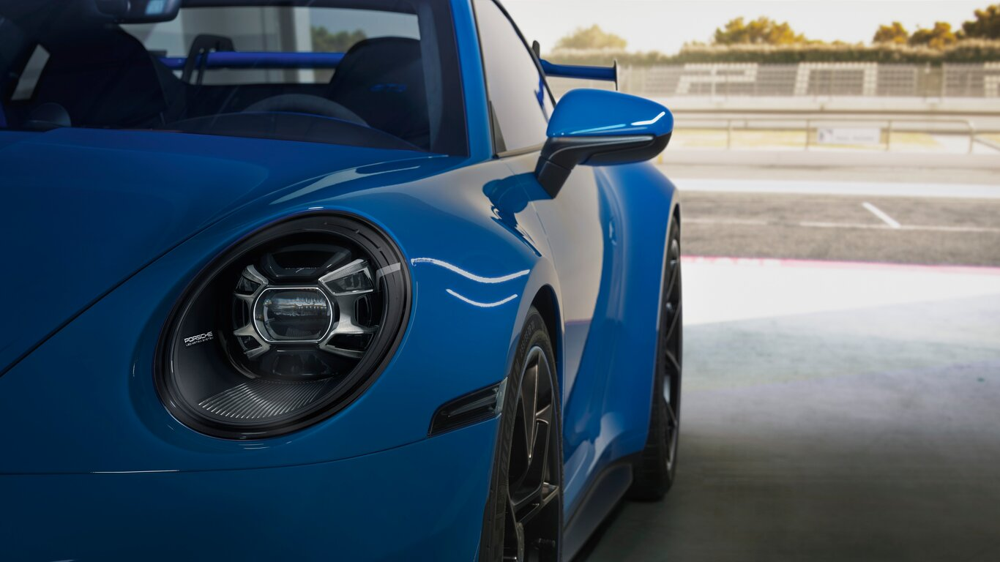

911
De 911 is het topmodel van Porsche , en tegelijk het meest iconische model. Het model die in 1963 op de markt kwam is sindsdien weinig veranderd qwa vorm en voorkomen. Waarom is de 911 zo populair? De 911 is uniek door zijn combinatie van snelheid met ultieme wendbaarheid. Dit is terug te zien in zijn recordtijden op de Nurburgring in het thuisland van deze ongeëvenaarde sportwagen. Wat deze wagen ook uniek maakt is dat hij het mogelijk maakt om in minimaal 3.5 sec naar de 100 te sprinten, in een verwarmde stoel, luisterend naar je favoriete klassieke muziek via de luxe Burmester boxen. Juist, deze auto verbind luxe en prestaties op de beste manier mogelijk. Voor de bestuurder die toch nog iets sportievers wilt biedt Porsche een rijke variatie aan modellen van de 911. Zo is er de basis variant , de 911 4 (4 staat voor 4 wiel aandrijving), 911 4S (s staat voor net iets sportiever en betere prestaties.) Mocht je bij een 4S nog steeds niet tevreden zijn kun je over stappen naar de Turbo modellen. Hierbij lever je wat luxe in maar krijg je er een sportwagen voor terug die super strak op de weg ligt, onder de 3 seconde op de 100 zit en kan uitgerust worden met een grote spoiler om je mede weggenoten te laten weten dat jij zeker geen standaard "saaie" 911 rijdt. Mocht je nog ergens extra geld hebben liggen, en wat extra moed , is het ook mogelijk een 911 GT3 of GT3RS te kopen. Dit zijn de ware race monsters die net aan legaal zijn op de openbare weg, met een 0-100 van 3.9 seconde zul je vast denken, maar waarom is zijn deze 0.4 seconde langzamer dan de Turbo S ? Dat is omdat deze auto's geoptimaliseerd zijn voor het circuit en de focus meer is gelegd op de wenbaarheid dan op het optrekken alleen.
Motorblok
Waarom is de 911 zo uiterst wenbaar? Dit komt door de motor die op de achteras ligt die zorgt voor een ultieme gewichtsverdeling wat het mogelijk maakt met 1 hand aan stuur , moeiteloos bochten en manoeuvres te ondergaan. De achterliggende motor van de Porsche 911 is door de geschiedenis heen altijd een 6 cilinder boxer (boxer is houdt in dat de cilinders horizontaal geplaatst zijn) motor geweest. De oudere modellen met een luchtgekoelde motor, en de nieuwere generaties met water gekoelde motoren. Of je een atmosferische motor hebt of eentje die is uitgerust met een turbo , ligt puur aan wat voor model je kiest. De 6 cilinder boxer motoren zijn ook een stuk minder onderhoudt gevoelig dan bijvoorbeeld italiaanse V10s of amerikaanse V8s. Of de motoren milleu bewust zijn valt zeker wat te zeggen, wel expirimenteerd Porsche enorm met het gebruik van Hybride motors en bijvoorbeeld start-stop systemen om zo de uitstoot te minimaliseren.
Eigen ervaring
Zelf heb ik meerdere keren het geluk gehad om in een 911 model te mogen rijden. De moddelen waar ik in heb gereden zijn een 911 uit het jaar 2017 en een 911 Turbo uit het jaar 2008. Wat mij erg opviel tijdens het rijden in deze auto's is dat ze verassend makkelijk te besturen zijn, ik heb geen enkele keer het gevoel gehad alsof ik de controle ging verliezen ondanks dat er bij beide meer dan 400 PK onder de kap lag. Hierdoor kun je zien dat de 911 een unieke wegligging heeft en erg rij vriendelijk is. Nu moet ik wel eerlijk zijn dat je jezelf bij beide auto's erg moest inhouden om niet in gevaarlijke verkeersituaties te komen aangezien de verleiding om het gas in te drukken altijd erg hoog is.